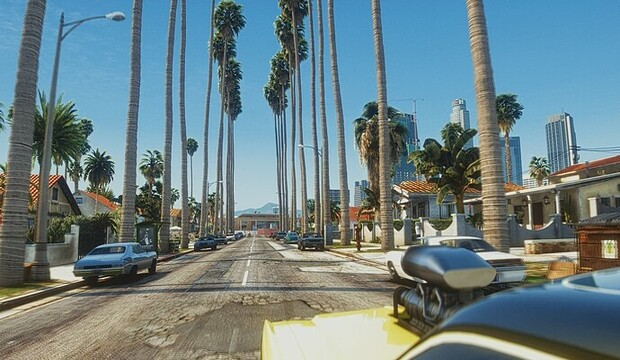
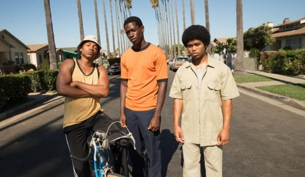

Set in 1980s Los Angeles, Snowfall is a gritty crime saga that chronicles the first crack cocaine epidemic through the eyes of a young street entrepreneur, a CIA operative, and a Mexican luchador. It’s a high-stakes "rise and fall" story about the intersection of ambition, systemic corruption, and the devastating birth of a drug empire.

Snowfall was primarily filmed on location in Los Angeles, using the real streets of South Central, Boyle Heights, and Pasadena to capture an authentic 1980s aesthetic. Interior scenes and controlled sets were shot at the Warner Bros. Studios in Burbank.

I’m obsessed because it’s the ultimate "rise and fall" epic. Seeing Franklin Saint evolve from a neighborhood kid to a ruthless kingpin is legendary, but it’s the mix of street-level hustle and CIA conspiracies that makes it so addictive. It’s gritty, the 80s aesthetic is flawless, and the acting is so raw it feels like a documentary. Truly top-tier TV.